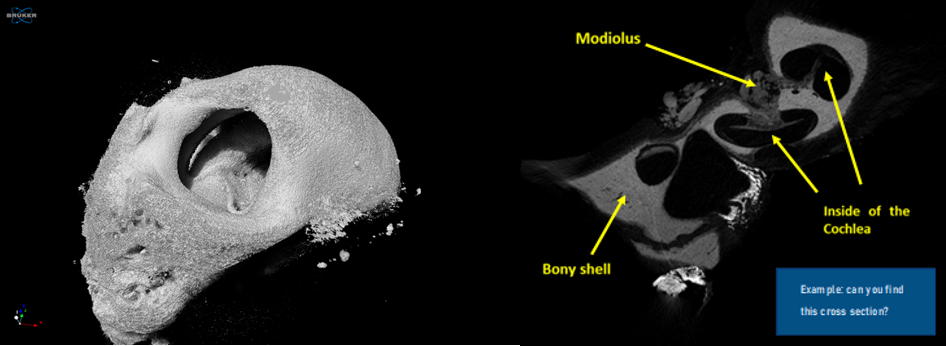

Sheep Cochlea Micro CT

First Image

Mid Image

Last Image

Description
MicroCT Analysis of the Cochlea Here, we have used a technique called microCT to build a 3D model of the cochlea based on the real sample. MicroCT gives you a cross-sectional view of the cochlea at any location. Use cochlea slicer below, to explore the cochlea yourself!
